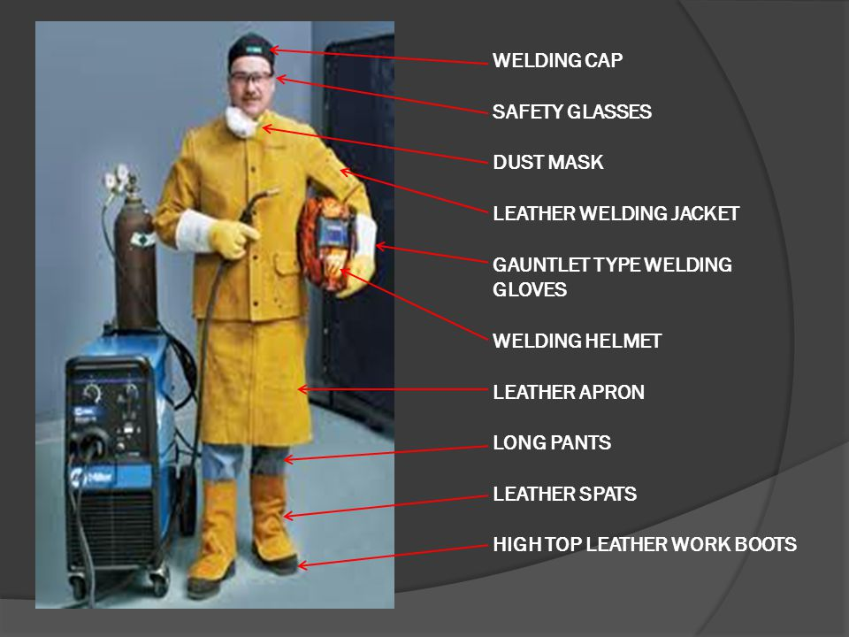
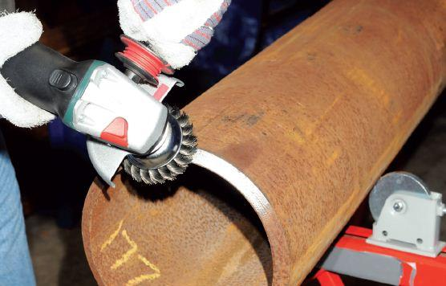
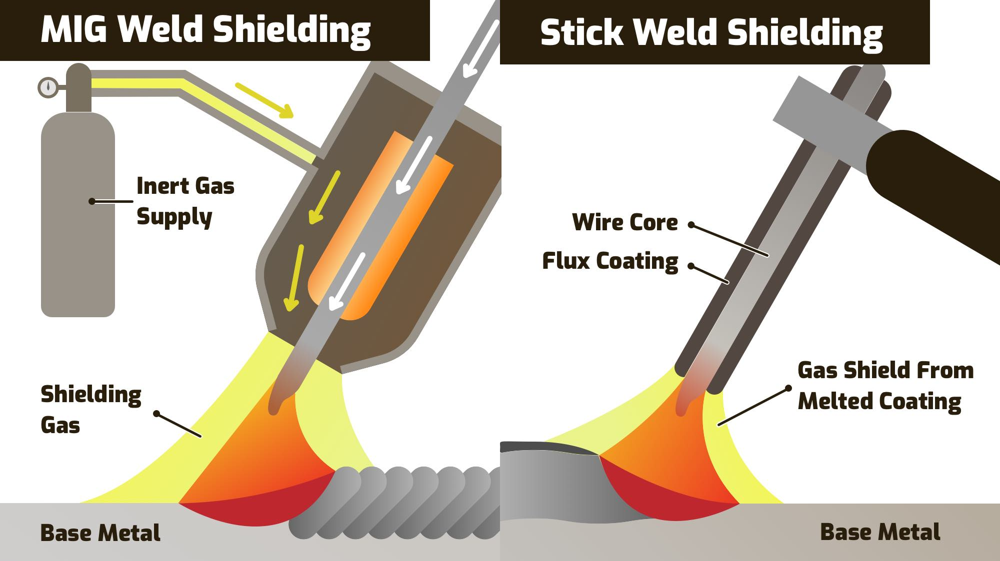

How to Weld
Preparation
- Put on safety gear: welding helmet with a dark lens, welding gloves, long-sleeved shirt, and pants without cuffs.
- Clear the work area of flammable materials and ensure good ventilation.

Set Up Your Equipment:
- Choose the appropriate welding machine and welding rod or wire based on the materials you're welding (e.g., MIG, TIG, stick welding).
- Set the welding machine to the recommended settings for your material thickness and type of weld.
Prepare the Materials:
- Clean the metal surfaces to be welded to remove dirt, rust, and paint using a wire brush or grinder.
- Clamp or secure the pieces to be welded in the desired position.

Welding
- Position yourself comfortably with a stable stance.
- Hold the welding torch or electrode holder firmly and at the correct angle (usually around 10-15 degrees from vertical).
- Strike an arc by touching the electrode to the metal or pressing the trigger on a MIG or TIG torch.
- Move the torch or electrode in a steady motion along the joint, maintaining a consistent speed and distance from the workpiece.

Creating the Weld
- Watch the weld pool as you work; it should be smooth and evenly distributed.
- Add filler material (if using) into the weld pool to strengthen the joint.
- Continue welding along the entire length of the joint, making sure to overlap each pass slightly.

Finishing
- Allow the welded area to cool gradually.
- Inspect the weld for any defects or irregularities.
- Grind or clean excess material for a smooth finish if necessary.
- Wire brush the area down
Clean-up
- Power down the welding machine.
- Store equipment properly and dispose of any waste materials safely.
Additional Resources